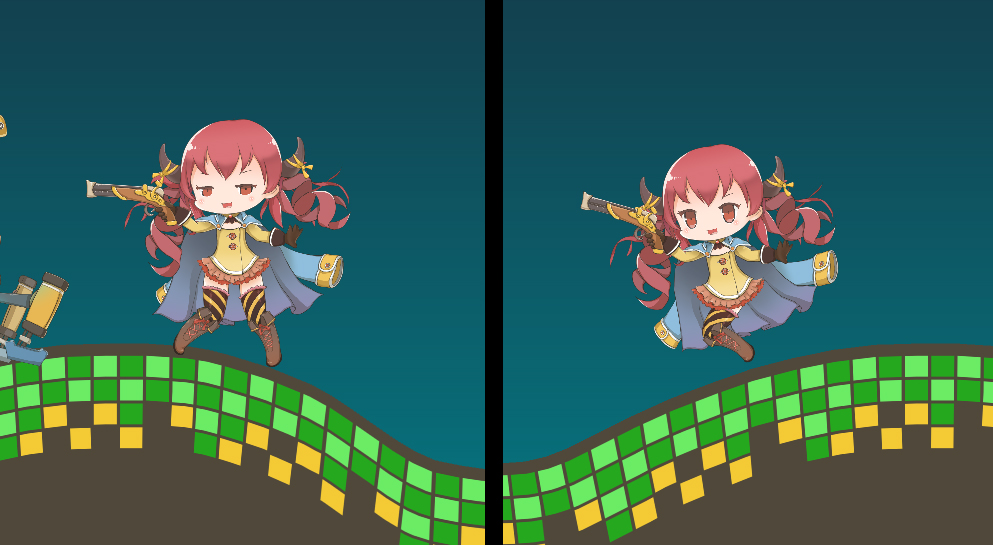
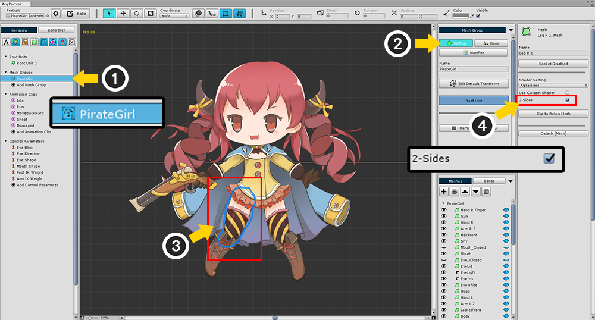
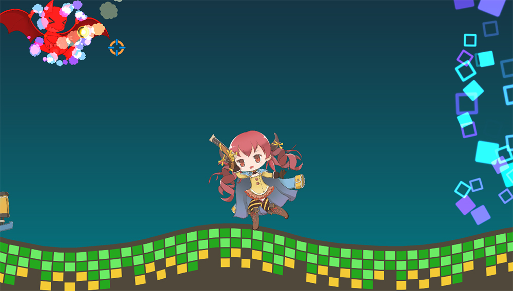

AnyPortrait > 메뉴얼 > 메시의 양면 렌더링
메시의 양면 렌더링
1.0.4
3D 렌더링 엔진에서 대부분은 기본적으로 단면만 렌더링을 합니다.
유니티 엔진도 마찬가지로 뒷면은 기본적으로 렌더링하지 않으며 이는 AnyPortrait도 마찬가지입니다.
그러나 앞, 뒷면에 상관없이 렌더링을 해야하는 경우가 있습니다.
이 페이지는 양면 렌더링이 필요한 예시와 해결 방법을 다룹니다.

7번째 데모 씬에는 해적 소녀 캐릭터가 있습니다.
이 캐릭터의 Run 애니메이션을 보면 오른쪽 다리 본의 X축 크기값이 -1인 것을 확인할 수 있습니다.
본을 반전했기 때문에 메시도 자연스럽게 X축으로 반전되서 나타나야합니다.

그렇지만 게임 씬에서 확인하면 캐릭터가 Run 애니메이션을 실행하여 달리는 모션을 취할 때,
오른쪽 다리가 사라지는 것을 보실 수 있습니다.
이는 메시가 X축으로 반전되어 앞면이 아닌 뒷면이 렌더링되기 때문입니다.
따라서 오른쪽 다리는 앞면과 뒷면이 항상 렌더링될 필요가 있습니다.

메시의 양면이 항상 렌더링되도록 만드는 방법입니다.
(1) 메시 그룹을 선택합니다.
(2) Setting 탭을 선택합니다.
(3) 대상이 되는 메시를 선택합니다.
(4) 메시의 설정에서 2-Sides에 체크합니다.

이제 정상적으로 렌더링이 되는 것을 확인할 수 있습니다.
양면 렌더링을 해야하는 경우와 주의할 점
기본적으로 Morph나 Rigging, 또는 Physics 모디파이어에 의해서 메시의 일부가 반전되는 경우에는 양면 렌더링이 필요합니다.
그렇지만 Transform으로 메시의 크기를 직접 반전하는 경우에는 굳이 양면 렌더링을 하지 않아도 됩니다.
양면 렌더링을 설정하면 버텍스들을 2번 렌더링하기 때문에 다소 느려질 수 있습니다.
사용자 설정된 Shader가 "Cull Off"로 설정되어 있다면 총 4번 렌더링될 수 있습니다.
이때 Alpha 계산이 제대로 수행되지 않을 수 있습니다.
참고
리깅이 적용된 메시의 크기가 반전된 경우에도 양면 메시로 설정하지 않은 상태로 정상적으로 렌더링할 수 있는 옵션이 v1.2.5에 추가되었습니다.
모든 경우에 적용되는 옵션은 아니므로 이 페이지에 소개된 양면 메시 기능과 더불어서 아래의 페이지를 같이 읽어보시는 것을 권장합니다.
- 리깅된 메시의 크기가 반전된 경우